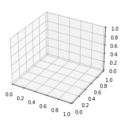
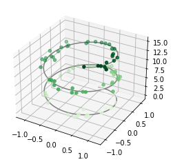
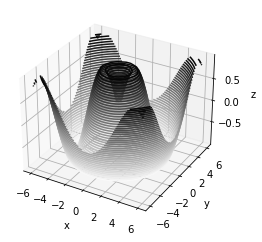
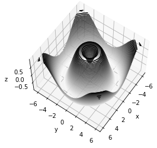
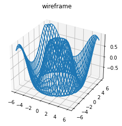
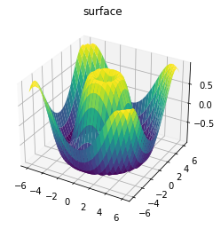
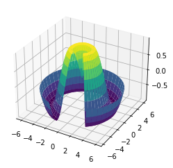
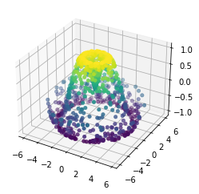
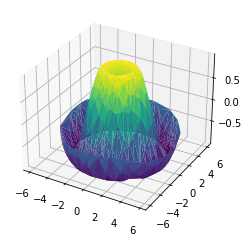
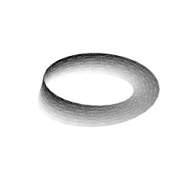

from mpl_toolkits import mplot3dMatplotlib의 3차원 플로팅
Matplotlib은 처음에는 2차원 플롯팅만 염두에 두고 설계되었습니다. 1.0 릴리스 무렵 Matplotlib의 2차원 디스플레이 위에 일부 3차원 플로팅 유틸리티가 구축되었으며 그 결과 3차원 데이터 시각화를 위한 편리한(다소 제한적이지만) 도구 세트가 탄생했습니다. 3차원 플롯은 기본 Matplotlib 설치에 포함된 ‘mplot3d’ 툴킷을 가져와 활성화됩니다.
이 서브모듈을 가져오면 여기에 표시된 대로 projection='3d' 키워드를 일반 축 생성 루틴에 전달하여 3차원 축을 생성할 수 있습니다(다음 그림 참조).
%matplotlib inline
import numpy as np
import matplotlib.pyplot as pltfig = plt.figure()
ax = plt.axes(projection='3d')
이 3차원 축을 활성화하면 이제 다양한 3차원 플롯 유형을 그릴 수 있습니다. 3차원 플로팅은 노트북에서 그림을 정적으로 보기보다는 대화식으로 볼 때 엄청난 이점을 얻을 수 있는 기능 중 하나입니다. 대화형 그림을 사용하려면 이 코드를 실행할 때 %matplotlib inline 대신 %matplotlib 노트북을 사용할 수 있습니다.
3차원 점과 선
가장 기본적인 3차원 플롯은 (x, y, z) 트리플 세트로 생성된 산점도의 선 또는 모음입니다. 앞에서 설명한 보다 일반적인 2차원 플롯과 유사하게 ax.plot3D 및 ax.scatter3D 함수를 사용하여 생성할 수 있습니다. 이에 대한 호출 서명은 2차원 호출 서명과 거의 동일하므로 출력 제어에 대한 자세한 내용은 Simple Line Plots 및 Simple Scatter Plots를 참조하세요. 여기서는 선 근처에 무작위로 그려진 몇 가지 점과 함께 삼각 나선을 플로팅합니다(다음 그림 참조).
ax = plt.axes(projection='3d')
# Data for a three-dimensional line
zline = np.linspace(0, 15, 1000)
xline = np.sin(zline)
yline = np.cos(zline)
ax.plot3D(xline, yline, zline, 'gray')
# Data for three-dimensional scattered points
zdata = 15 * np.random.random(100)
xdata = np.sin(zdata) + 0.1 * np.random.randn(100)
ydata = np.cos(zdata) + 0.1 * np.random.randn(100)
ax.scatter3D(xdata, ydata, zdata, c=zdata, cmap='Greens');
페이지에 깊이감을 주기 위해 분산점의 투명도가 조정되었습니다. 정적 이미지 내에서는 3차원 효과를 확인하기 어려운 경우가 있지만 대화형 보기를 사용하면 점 레이아웃에 대한 좋은 직관을 얻을 수 있습니다.
3차원 등고선 플롯
밀도 및 등고선 플롯에서 살펴본 등고선 플롯과 유사하게 mplot3d에는 동일한 입력을 사용하여 3차원 릴리프 플롯을 생성하는 도구가 포함되어 있습니다. ax.contour와 마찬가지로 ax.contour3D는 모든 입력 데이터가 2차원 일반 그리드 형식이어야 하며 각 지점에서 z 데이터가 평가되어야 합니다. 여기서는 3차원 정현파 함수의 3차원 윤곽선 다이어그램을 보여줍니다(다음 그림 참조).
def f(x, y):
return np.sin(np.sqrt(x ** 2 + y ** 2))
x = np.linspace(-6, 6, 30)
y = np.linspace(-6, 6, 30)
X, Y = np.meshgrid(x, y)
Z = f(X, Y)fig = plt.figure()
ax = plt.axes(projection='3d')
ax.contour3D(X, Y, Z, 40, cmap='binary')
ax.set_xlabel('x')
ax.set_ylabel('y')
ax.set_zlabel('z');
때로는 기본 보기 각도가 최적이 아닌 경우가 있는데, 이 경우 view_init 메소드를 사용하여 고도 및 방위각을 설정할 수 있습니다. 다음 그림에 시각화된 다음 예에서는 고도 60도(즉, x-y 평면에서 60도 위)와 방위각 35도(즉, z축을 기준으로 시계 반대 방향으로 35도 회전)를 사용합니다.
ax.view_init(60, 35)
fig
다시 말하지만, Matplotlib의 대화형 백엔드 중 하나를 사용할 때 클릭하고 드래그하여 이러한 유형의 회전을 대화형으로 수행할 수 있습니다.
와이어프레임 및 표면 플롯
그리드 데이터에 작동하는 다른 두 가지 유형의 3차원 플롯은 와이어프레임 플롯과 표면 플롯입니다. 이는 값의 그리드를 가져와 지정된 3차원 표면에 투영하여 결과 3차원 형태를 시각화하기 쉽게 만들 수 있습니다. 다음은 와이어프레임 사용의 예입니다(다음 그림 참조).
fig = plt.figure()
ax = plt.axes(projection='3d')
ax.plot_wireframe(X, Y, Z)
ax.set_title('wireframe');
표면 플롯은 와이어프레임 플롯과 비슷하지만 와이어프레임의 각 면은 채워진 다각형입니다. 채워진 다각형에 컬러맵을 추가하면 다음 그림에서 볼 수 있듯이 시각화되는 표면의 토폴로지를 인식하는 데 도움이 될 수 있습니다.
ax = plt.axes(projection='3d')
ax.plot_surface(X, Y, Z, rstride=1, cstride=1,
cmap='viridis', edgecolor='none')
ax.set_title('surface');
표면도의 값 격자는 2차원이어야 하지만 직선일 필요는 없습니다. 다음은 surface3D 플롯과 함께 사용하면 시각화 중인 함수에 대한 조각을 제공할 수 있는 부분 극좌표 그리드를 생성하는 예입니다(다음 그림 참조).
r = np.linspace(0, 6, 20)
theta = np.linspace(-0.9 * np.pi, 0.8 * np.pi, 40)
r, theta = np.meshgrid(r, theta)
X = r * np.sin(theta)
Y = r * np.cos(theta)
Z = f(X, Y)
ax = plt.axes(projection='3d')
ax.plot_surface(X, Y, Z, rstride=1, cstride=1,
cmap='viridis', edgecolor='none');
표면 삼각측량
일부 애플리케이션의 경우 이전 루틴에서 요구하는 균일하게 샘플링된 그리드가 너무 제한적입니다. 이러한 상황에서는 삼각분할 기반 플롯이 유용할 수 있습니다. 데카르트 또는 극좌표 그리드에서 균등한 추첨을 수행하는 대신 무작위 추첨 세트를 사용한다면 어떻게 될까요?
theta = 2 * np.pi * np.random.random(1000)
r = 6 * np.random.random(1000)
x = np.ravel(r * np.sin(theta))
y = np.ravel(r * np.cos(theta))
z = f(x, y)다음 그림과 같이 점의 산점도를 생성하여 샘플링 중인 표면에 대한 아이디어를 얻을 수 있습니다.
ax = plt.axes(projection='3d')
ax.scatter(x, y, z, c=z, cmap='viridis', linewidth=0.5);
이 포인트 클라우드는 아쉬운 점이 많습니다. 이 경우에 도움이 될 함수는 ax.plot_trisurf입니다. 이 함수는 먼저 인접한 점 사이에 형성된 삼각형 세트를 찾아 표면을 생성합니다(여기서 x, y 및 z는 1차원 배열이라는 점을 기억하세요). 다음 그림은 결과를 보여줍니다.
ax = plt.axes(projection='3d')
ax.plot_trisurf(x, y, z,
cmap='viridis', edgecolor='none');
결과는 확실히 그리드를 사용하여 플롯할 때만큼 깨끗하지는 않지만 이러한 삼각측량의 유연성으로 인해 정말 흥미로운 3차원 플롯이 가능해집니다. 예를 들어 다음에 살펴보겠지만 이를 사용하여 3차원 뫼비우스 띠를 그리는 것이 실제로 가능합니다.
예: 뫼비우스 띠 시각화
뫼비우스의 띠는 반쯤 비틀어 고리에 접착한 종이 조각과 비슷하여 한 면만 있는 물체가 됩니다! 여기에서는 Matplotlib의 3차원 도구를 사용하여 이러한 객체를 시각화하겠습니다. 뫼비우스의 띠를 만드는 핵심은 매개변수화에 대해 생각하는 것입니다. 뫼비우스의 띠는 2차원 띠이므로 두 개의 고유한 차원이 필요합니다. 루프 주위의 \(0\)에서 \(2\pi\) 범위에 있는 \(\theta\)와 스트립 너비에 걸쳐 -1에서 1까지의 범위에 있는 \(w\)를 호출해 보겠습니다.
theta = np.linspace(0, 2 * np.pi, 30)
w = np.linspace(-0.25, 0.25, 8)
w, theta = np.meshgrid(w, theta)이제 이 매개변수화를 통해 내장된 스트립의 (x, y, z) 위치를 결정해야 합니다.
그것에 대해 생각해 보면 두 가지 회전이 일어나고 있음을 확인할 수 있습니다. 하나는 중심에 대한 루프의 위치(\(\theta\)라고 함)이고 다른 하나는 축을 중심으로 스트립을 비틀는 것입니다(\(\phi\)라고 함). 뫼비우스 띠의 경우, 전체 루프 동안 띠가 반쯤 비틀리도록 해야 합니다. 즉, \(\Delta\phi = \Delta\theta/2\):
phi = 0.5 * theta이제 우리는 삼각법에 대한 기억을 사용하여 3차원 임베딩을 유도합니다. 중심으로부터 각 점의 거리인 \(r\)를 정의하고 이를 사용하여 포함된 \((x, y, z)\) 좌표를 찾습니다.
# radius in x-y plane
r = 1 + w * np.cos(phi)
x = np.ravel(r * np.cos(theta))
y = np.ravel(r * np.sin(theta))
z = np.ravel(w * np.sin(phi))마지막으로 객체를 플롯하려면 삼각측량이 올바른지 확인해야 합니다. 이를 수행하는 가장 좋은 방법은 기본 매개변수화 내에서 삼각분할을 정의한 다음 Matplotlib가 이 삼각분할을 뫼비우스 띠의 3차원 공간에 투영하도록 하는 것입니다. 이는 다음과 같이 수행할 수 있습니다(다음 그림 참조).
# triangulate in the underlying parametrization
from matplotlib.tri import Triangulation
tri = Triangulation(np.ravel(w), np.ravel(theta))
ax = plt.axes(projection='3d')
ax.plot_trisurf(x, y, z, triangles=tri.triangles,
cmap='Greys', linewidths=0.2);
ax.set_xlim(-1, 1); ax.set_ylim(-1, 1); ax.set_zlim(-1, 1)
ax.axis('off');
이러한 모든 기술을 결합하면 Matplotlib에서 다양한 3차원 객체와 패턴을 생성하고 표시하는 것이 가능합니다.